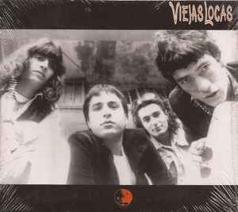
1996
CRISTIAN "PITY" ÁLVAREZ
Viejas Locas · Intoxicados · Rock argentino
CONOCER SU HISTORIA ↓EL PERSONAJE
Cristian "Pity" Álvarez es uno de los nombres más reconocibles del rock argentino de las últimas décadas. Su trayectoria quedó marcada principalmente por dos bandas: Viejas Locas e Intoxicados.
Desde los escenarios de Buenos Aires hasta sus diferentes etapas musicales, Pity construyó una identidad propia que combinó rock, canciones de barrio, distintos géneros y una forma muy particular de escribir.
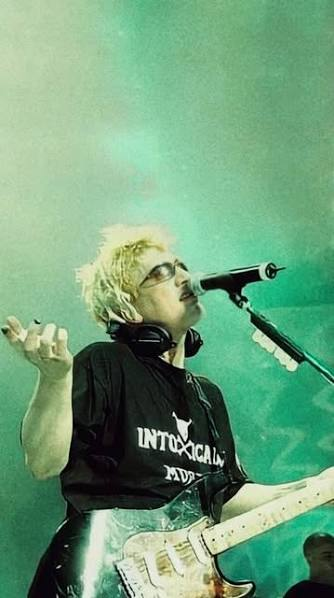
BUENOS AIRES · ROCKPity Álvarez comenzó a desarrollar su carrera musical dentro de la escena del rock barrial porteño. A fines de los años 80 formó Viejas Locas junto a otros músicos.
La banda fue creciendo durante los años 90 hasta convertirse en una de las agrupaciones importantes de aquella escena.
Después de la primera etapa de Viejas Locas, pity creo una banda llamado pity alvarez y los hijos de puta, su objetivo era tocar canciones de viejas locas y adelantar canciones de intoxicados esta banda duro apenas un show
Despues de esto, pity crearia intoxicados
CAPÍTULO I
El comienzo de una historia que terminaría convirtiéndose en una parte importante del rock argentino.
Viejas Locas nació a fines de los años 80 y comenzó a hacerse conocida durante la década siguiente. La banda desarrolló un sonido relacionado con el rock, el blues y el rock barrial.
Con Pity Álvarez como una de sus principales figuras, Viejas Locas publicó tres discos de estudio durante su primera etapa y alcanzó una importante popularidad.
La banda se separó en 2000, aunque posteriormente volvió a reunirse en diferentes momentos.

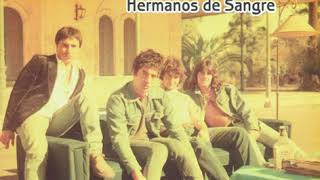
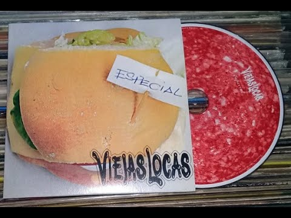
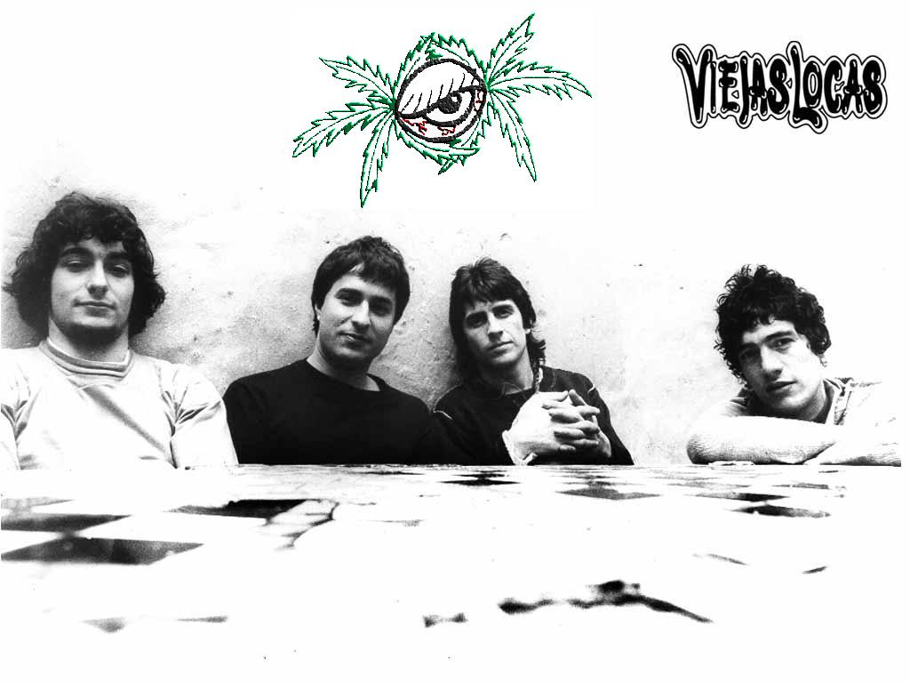
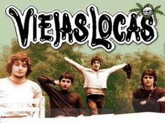
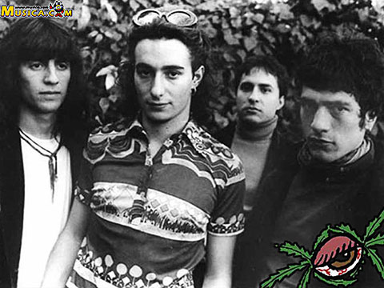
CAPÍTULO II
Una nueva etapa. Otro sonido. Otra forma de hacer canciones.
Después de la separación de Viejas Locas, Pity Álvarez comenzó un nuevo proyecto: Intoxicados.
La banda apareció a comienzos de los 2000 y permitió que Pity explorara sonidos mucho más variados.
Rock, reggae, hip hop, funk y otros estilos comenzaron a convivir dentro de sus canciones.
Esa búsqueda quedó reflejada especialmente en los discos que Intoxicados publicó durante la década.
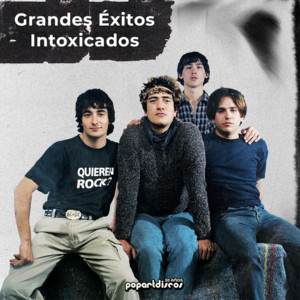
Intoxicados amplió considerablemente el universo musical asociado a Pity Álvarez.
La banda experimentó con diferentes géneros y construyó una identidad propia que se fue transformando disco a disco.
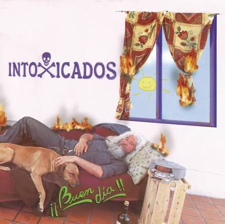
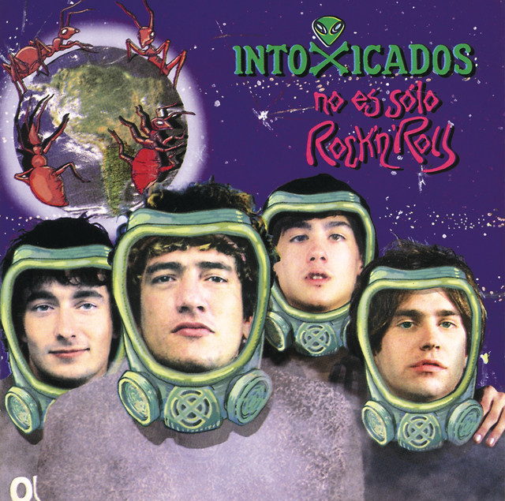
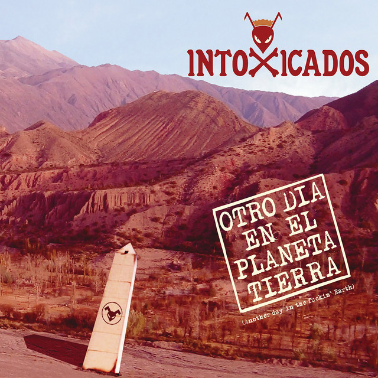
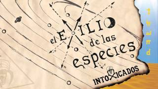
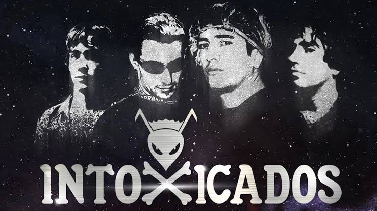
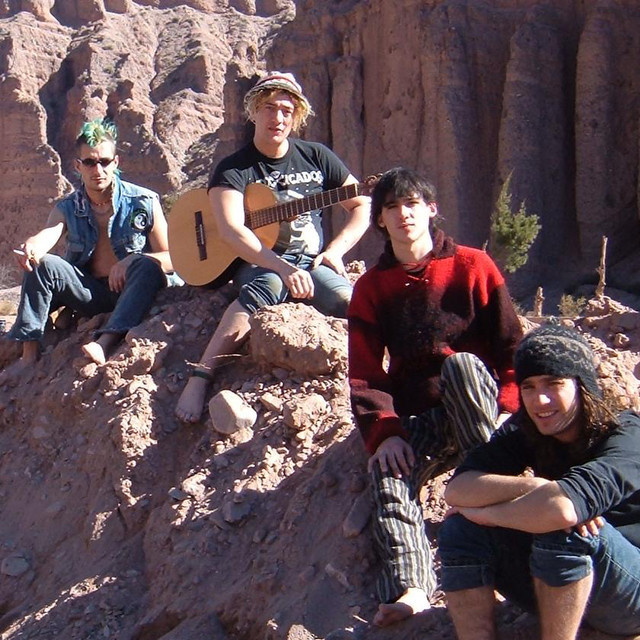
Una selección de canciones de Viejas Locas, Intoxicados y Pity Álvarez.
La simetría
Viejas LocasUna vela
IntoxicadosEstá saliendo el sol
IntoxicadosHomero
Viejas LocasSe fue al cielo
Intoxicados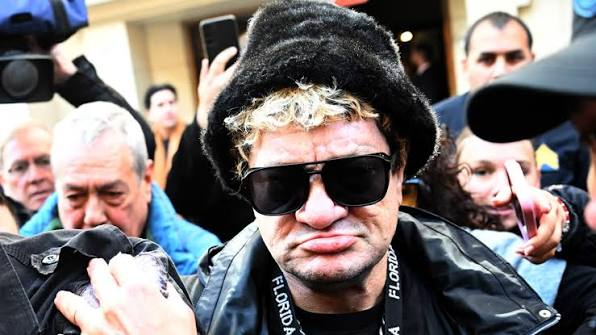
El 12 de julio de 2018 murió Cristian Maximiliano Díaz, conocido como "Gringo", en el barrio de Villa Lugano.
Pity Álvarez fue acusado por el homicidio y el proceso judicial comenzó años después de los hechos.
En agosto de 2026 comenzó el juicio oral. Durante septiembre hubo distintas suspensiones y presentaciones de la defensa, por lo que el proceso continuaba desarrollándose.
La situación actual de Pity Álvarez está atravesada tanto por su trayectoria musical como por su situación judicial.
En septiembre de 2026 continuaba el proceso judicial relacionado con el caso Cristian Díaz, mientras Pity permanecía internado en el Hospital Tornú.
Su carrera dejó dos etapas musicales muy diferentes: Viejas Locas e Intoxicados, dos bandas fundamentales para entender su recorrido artístico.
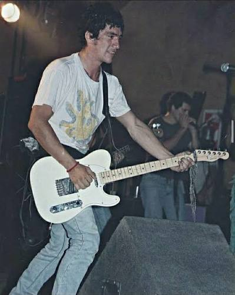
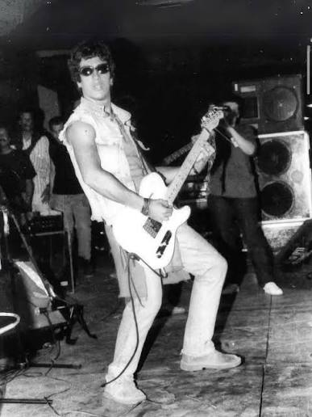
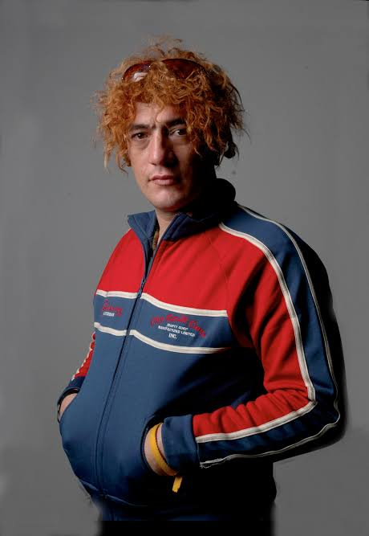
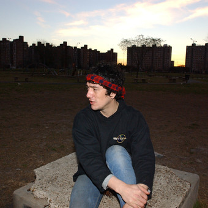